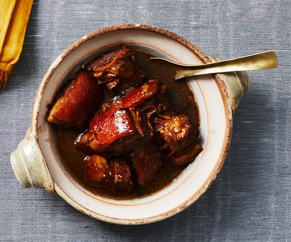

Braised pork belly in soy sauce

Description
Impressive your friends with this rich but succulent dish
Ingredients
- Pork belly - 1kg
- Light soy sauce - 3tbsp
- Dark soy sauce - 3tbsp
- Brown sugar - 2tbps
- Xiaosing cooking wine - 2tbps
- Ginger - thumb size
- Star anise - 1 clove
- Cooking oil - 1tbps
- Water
Steps
- Blanch pork belly for 5 minutes and remove and rest
- Dice pork belly into small chucks
- Heat up pan with cooking oil and cook the ginger and star anise for 1 min until you can small the amora
- Add the pork belly and cook until lightly browned
- Mix the light soy sauce, dark soy sauce, brown sugar and xiaosing cooking wine in a small bowl
- Slowly add the mixture into pork belly and cook for 5 mins
- Add water up until it nearly covers the pork belly
- Simmer for 40mins, if sauce is reduction, add more water, soy sauce, xiaosing to your liking
- Simmer for further 30 mins
Return to main page